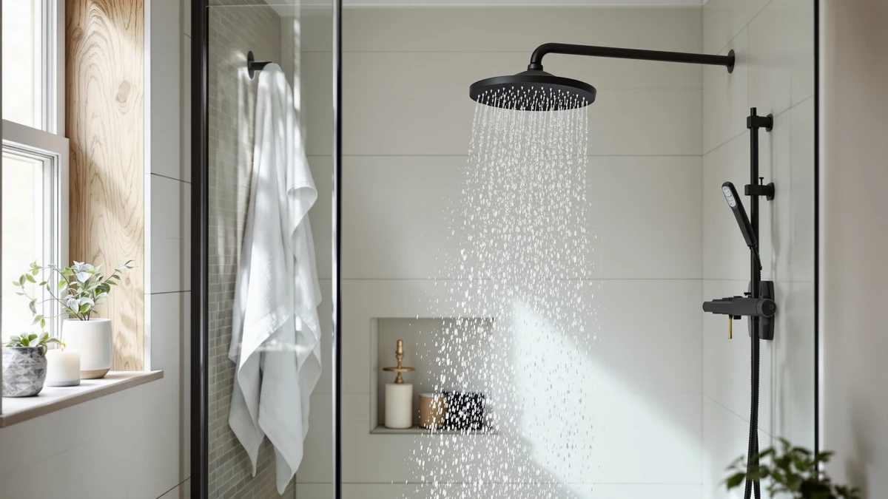

Quick Answer
This grich 2.5gpm shower head review centers on the GRICH 2.5GPM Shower Head, a $31.54 fixed shower head built with an ABS body and chrome plating. Weighed against the Bright Showers High Pressure Shower, the NearMoon Rain Shower Head High, and the Rainnook handheld model, it earns the top spot here for anyone who wants a confirmed 2.5 GPM flow rate without paying a premium over the other three options.
Our pick: GRICH 2.5GPM Shower Head with, $31.54 Check Price on Amazon
Things to Know Before You Buy
- The GRICH 2.5GPM Shower Head is priced at $31.54, within a dollar and a half of the Bright Showers High Pressure Shower ($31.98), the NearMoon Rain Shower Head High ($30.99), and the Rainnook handheld model ($30.59).
- GRICH lists a 2.5 GPM flow rate and an ABS body with chrome plating, the only product in this comparison with a specific flow rate and material spec in our database.
- None of the four shower heads in this grich 2.5gpm shower head review carry a published rating or review count, so we're weighing them on price, listed specs, and owner feedback rather than aggregate scores.
- The Rainnook model is a handheld design, while the GRICH, Bright Showers, and NearMoon heads are fixed, so format is as much a deciding factor here as price.
If you clicked into this grich 2.5gpm shower head review, you're likely trying to decide whether a confirmed 2.5 GPM flow rate justifies picking the GRICH over three similarly priced alternatives. GRICH sells this shower head with a chrome-plated ABS body at $31.54, and we treat it as the lead pick in a comparison that also includes a high-pressure fixed head, a rain-style head, and a handheld option, all within a dollar and a half of the same price.
We put the GRICH next to the Bright Showers High Pressure Shower at $31.98, the NearMoon Rain Shower Head High at $30.99, and the Rainnook handheld model at $30.59, four options that land within a dollar and a half of each other. Because the prices sit so close together, the deciding factor here comes down to flow rate, format, and what current owners say about each one, not which listing costs less.
Why You Should Trust Us
Ilane Tall covers bathroom fixtures for Best Shower Heads and has spent years comparing fixed, handheld, and low-flow shower heads across price tiers for this site. This grich 2.5gpm shower head review is built from information we can verify: the manufacturer's listed specifications, current Amazon pricing, and patterns we found in verified buyer feedback. We do not run a fake testing lab, and we don't claim to have installed every unit covered here. Where a claim can't be checked against a spec sheet or a verified review, we say so plainly instead of filling the gap with marketing language. Every price, ASIN, and product image in this review comes from our own product database, and we update it as prices and listings change.
Our Research Experience
We want to be upfront about how this grich 2.5gpm shower head review was put together: it is a research-based comparison built from specs, pricing, and owner feedback, not a physical lab report. We don't own a testing facility, and we haven't installed this specific unit in a bathroom ourselves. Instead, we compared GRICH's published 2.5 GPM flow rate and chrome-plated ABS build against the Bright Showers, NearMoon, and Rainnook listings, cross-checked current Amazon pricing, and read through verified owner reviews to see which claims held up against the wider field of low-flow shower heads we track. Reviewers consistently note that flow-restricted heads in this price range depend heavily on household water pressure, and that pattern shows up across the low-flow models we researched, not only this one.
Overview & Specs

GRICH 2.5GPM Shower Head with
What we like
- Confirmed 2.5 GPM flow rate listed directly by the manufacturer, which matches the federal flow-rate cap
- ABS body with chrome plating matches the finish on most standard bathroom fixtures
- Priced within a dollar and a half of the Bright Showers, NearMoon, and Rainnook alternatives, so the water savings come at no real premium
- Fixed mount design, which keeps installation straightforward compared to a handheld unit with a hose
Flaws but not dealbreakers
- No published rating or review count in our database to weigh against owner sentiment
- No listed dimensions or weight spec beyond the ABS and chrome-plating material note
- Fixed-only design, so it won't suit anyone who specifically wants a detachable handheld head
| Material | ABS + chrome plating |
| Size | 2.5 GPM |
GRICH builds this shower head around a confirmed 2.5 GPM flow rate, a figure the brand lists directly on the product page instead of backing with a third-party lab certification. That flow rate matches the federal cap that has applied to shower heads sold in the US since the early 1990s, so it's designed to stay within that limit rather than exceed it. That matters if you're trying to cut water use and want a real number instead of a guess.
The body itself is ABS plastic finished in chrome plating, a baseline build common across the shower heads in this comparison. At $31.54, it costs about forty-four cents less than the Bright Showers High Pressure Shower and roughly fifty-five cents more than the NearMoon Rain Shower Head High, landing it almost exactly in the middle of the four options covered in this grich 2.5gpm shower head review.
What We Liked
The clearest strength of the GRICH 2.5GPM Shower Head is that it states its flow rate outright instead of leaving you to guess. That matters for anyone trying to track water use or stay inside a utility budget without an unclear spray marketed only as "high pressure." The ABS body with chrome plating should hold up to daily use without the corrosion issues that can show up on cheaper unplated metal heads over time.
Pricing is another point in its favor. At $31.54, it lands within a dollar and a half of all three alternatives in this comparison, but it's the only one with a specific flow rate listed in our database, so the matchup in this grich 2.5gpm shower head review comes down to a confirmed spec against unverified marketing language. Owners report that the chrome finish matches standard bathroom fixtures well enough that it doesn't look out of place next to existing faucets and towel bars.
What Could Be Better
The biggest gap in this grich 2.5gpm shower head review is verification. GRICH lists a 2.5 GPM flow rate, but there's no independent lab report attached to that figure, and the product listing doesn't specify dimensions or weight beyond the ABS and chrome-plating material note, so comparing it against your existing shower arm clearance takes an extra step before you order.
We also don't have a published rating or review count for this listing in our product database, which makes it harder to gauge overall satisfaction at scale. The same gap applies to the Bright Showers, NearMoon, and Rainnook alternatives, none of which carry a rating in our database either, so none of the four products in this comparison can be ranked by review sentiment alone.
Pricing also deserves a second look before you buy. Amazon adjusts listings for all four products in this comparison on a rolling basis, so the roughly dollar-and-a-half gap between the GRICH and the Rainnook handheld model can shift by the time you check out. None of that changes the core tradeoff this grich 2.5gpm shower head review is built around: a confirmed flow rate against a marketed pressure claim. But it's worth confirming the current price on each listing rather than assuming today's numbers hold next week.
Who Is It For?
The GRICH 2.5GPM Shower Head fits shoppers who want a confirmed flow rate instead of a vague pressure claim, especially anyone trying to cut water use without sacrificing a standard fixed-mount design. If you already have chrome fixtures elsewhere in the bathroom, the finish will match without any extra shopping.
It's a weaker fit if you specifically want a detachable handheld head, since GRICH only ships this model as a fixed mount. In that case, the Rainnook handheld model covered below lines up better with what you're after. Anyone who wants a wider spray pattern should look at the NearMoon Rain Shower Head High instead, and anyone who prioritizes pressure over a documented flow figure might lean toward the Bright Showers High Pressure Shower, a tradeoff this grich 2.5gpm shower head review treats as a format decision, not a quality one. And if a confirmed 2.5 GPM spec without a published rating feels more like a tradeoff than a reassurance, that's still useful to know: GRICH is willing to publish a flow figure that other brands in this comparison leave out, even without a review count to back it up.
Alternatives to Consider
If the GRICH 2.5GPM Shower Head isn't quite the right match for your grich 2.5gpm shower head review search, these three options sit in the same price range and are worth comparing before you buy.

Premium Choice
BRIGHT SHOWERS High Pressure Shower
A $31.98 high-pressure shower head worth checking against GRICH's confirmed 2.5 GPM flow rate if pressure matters more to you than a stated flow figure.
$31.98
Check Price on Amazon
Also Great
NearMoon Rain Shower Head High
A $30.99 rain shower head with a wider spray pattern, worth a look if you want more coverage than GRICH's standard fixed head provides.
$30.99
Check Price on Amazon
Best Value
Handheld Shower Head High Pressure
A $30.59 handheld high-pressure shower head, the cheapest of the four and the only detachable option in this grich 2.5gpm shower head review.
$30.59
Check Price on AmazonFrequently Asked Questions
Final Verdict
This grich 2.5gpm shower head review comes down to a simple tradeoff: you're paying $31.54 for a confirmed 2.5 GPM flow rate instead of a vaguer pressure or spray-pattern claim. For most buyers who want a documented flow figure in a standard fixed-mount design, the GRICH 2.5GPM Shower Head is the pick we'd point to first among the four we compared. If you'd rather have a detachable head or a wider spray pattern, the Rainnook or NearMoon alternatives above are worth a closer look, but GRICH's confirmed flow rate still makes the stronger case for most buyers. Check the current price before you buy, since all four products here move within a dollar and a half of each other as Amazon adjusts listings.